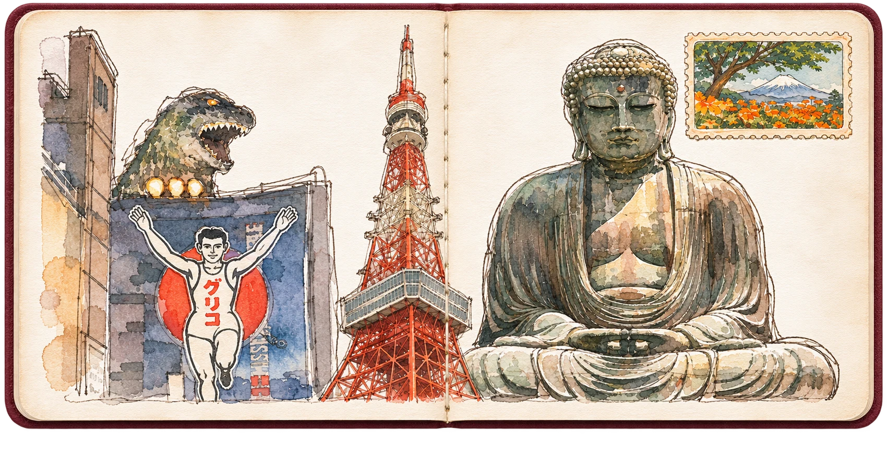
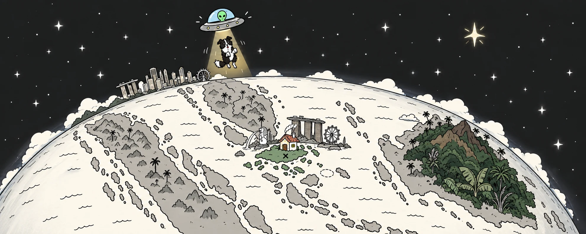
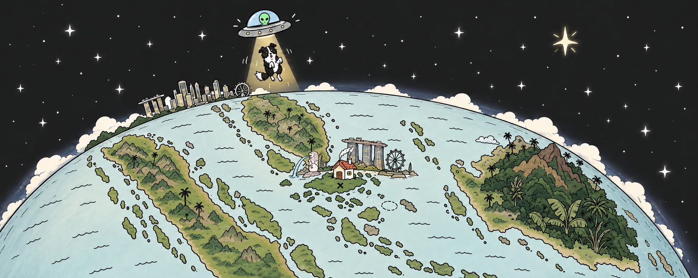
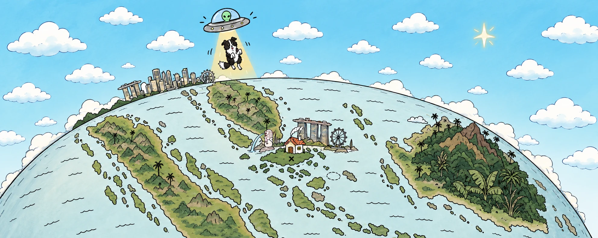
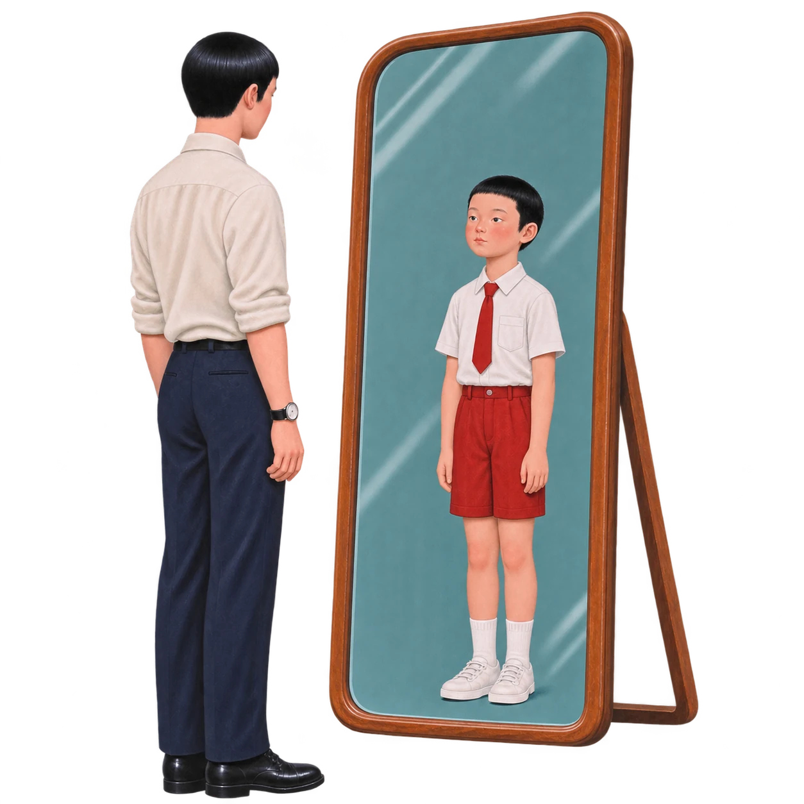
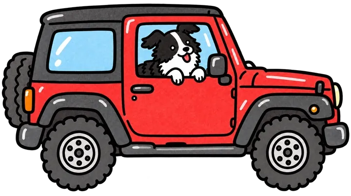

Google Plan
A new Google Maps feature that lets people plan a whole trip in one app, instead of juggling notes, chats, spreadsheets and bookmarks.
- Role
- UX designer
- Type
- Capstone
- Year
- 2026




A new Google Maps feature that lets people plan a whole trip in one app, instead of juggling notes, chats, spreadsheets and bookmarks.

A redesign of Singapore's mental-health portal, so a first visit late at night leads to real help instead of a 14-screen maze.
Tap the photo to shuffle
I'm a UX designer in Singapore who spent six years as a business and systems analyst before realising the part I loved most was the people on the other side of the requirements. Through the AIUX programme I've learned to start with research, not screens, because the real problem is rarely the one in the brief.
Outside work, I'm usually walking somewhere with a camera. Street photography taught me to slow down and watch how people actually move through a space: where they hesitate, what they ignore, what makes them stop. Turns out that's most of UX too.
